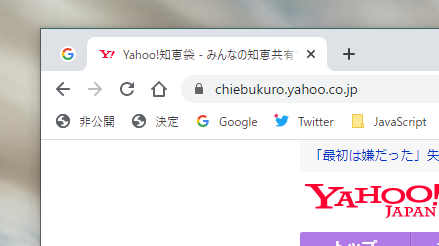

Yahoo!知恵袋の質問回答の投稿者名を半自動で一括非公開にする
知恵袋の投稿は削除することはできませんが、投稿者名を非公開にはできるので、それで対処することになりますが、過去の投稿の名前を一括で非公開にする機能は備わっていません。
自分の場合は、質問と回答を合わせて1000件近くの投稿があったので、それを一つずつ非公開に切り替えるのは大変過ぎる…という訳で出来るだけ楽をするためのメモ。
準備するもの
- Node.jsの環境
- Google Chrome (もしくはChromeの拡張機能が動くブラウザ)
- Copy All Urls (Chromeの拡張機能)
- おーとくりっか～
大まかな手順
- Node.jsで過去の質問と回答のURLリストを取得する
- ブックマークバーに、[この投稿者の投稿者名を非公開にする]ボタンと、決定ボタンのコピーを作成し、タブを一つ固定する
- お～とくりっか～の設定をする
- Copy All UrlsでURLを少しずつ開く
- おーとくりっか～で(2)で作ったボタンとタブを閉じる動作をひたすら繰り返す
1. URLリストの取得
下のスクリプトを適当な名前をつけてNode.js上で実行します。
const https = require('https');
const jsdom = require('jsdom');
const { JSDOM } = jsdom;
// 設定
const page_total = 100; // 取得するページ数
const register_number = 000000000; // My知恵袋の登録番号
const mode = 'ans'; // queなら質問、ansなら回答
for(var i=0; i < page_total; i++){
const url = 'https://chiebukuro.yahoo.co.jp/my/myspace_' + mode + 'detail.php?writer=' + register_number + '&page=' + i;
https.get(url, res => {
let html = '';
res.on('data', line => html += line);
res.on('end', () => {
const dom = new JSDOM(html);
const elm = dom.window.document.querySelectorAll('.iconStatus + a');
for(var i=0; i < elm.length; i++) {
console.log(elm[i].href)
}
});
});
}7行目は、My知恵袋に書いてある登録番号を書いておきます。8行目はqueなら質問、ansなら回答のURLを取得できます。
実行したら、全てのURLがコンソール上に表示されるので、コピペして適当な場所に保存しておきます。
2. ブックマークレットの作成とタブの固定
マウス操作を自動化して、非公開にする動作を代行してもらうのですが、肝心のこの投稿者の投稿者名を非公開にするボタンと決定ボタンの位置が、質問や回答によってバラバラなので都合が悪い…
ので、常に同じ場所でボタンをクリックできるように、ブックマークレットで2つのボタンのコピーをブックマークバー上に作成しておきます。
非公開にするボタン
javascript:document.querySelector('.beClsd').click();URL欄に上のコードをコピーし、「非公開」という名前で保存。また、ブックマークバーの一番左端に配置しておきます。
決定ボタン
javascript:document.querySelector('.qa-submit input').click();同じくURL欄に上のコードをコピーし、「決定」という名前で保存。非公開ボタンの隣に配置しておきましょう。
タブの固定
Google Chromeは最後のタブが閉じられるとウインドウごと閉じてしまうので、それを防ぐために、Googleなど適当なページを開き、タブを右クリック → 固定 でタブを固定しておきます。
ここまでの作業でChromeが下のようになっていたら正解です。

3. お～とくりっか～の設定
お～とくりっか～で以下の動作を繰り返すよう、座標を登録します。
- 非公開を左クリック
- 決定を左クリック
- タブの左端を右クリック
- 閉じるを左クリック
[autoclicker]
CLICKINTERVAL=4000
MAXCLICKCOUNT=20
STARTCOUNT=0
LISTSTRCOUNT=4
LISTSTR0=36 , 90 , L , 1000
LISTSTR1=117 , 90 , L , 1000
LISTSTR2=46 , 19 , R , 4000
LISTSTR3=133 , 198 , L , 200上のコードをコピペしてAutoClicker.iniという名前で保存し、お～とくりっか～で読み込めばそのまま使えますが、環境によって座標が違うかもしれないので適宜調整してください。
4. 非公開にする
手順1で保存したURLを少しずつ（50件ずつくらい？）コピーし、Chromeの拡張機能「Copy All Urls」のアイコンを左クリック → Pasteを選び、URLを新規タブで一気に開きます。
そして手順3で用意したお～とくりっか～の開始ボタンを押せば、あとは勝手に質問や回答の投稿者の名前が非公開になっていきます。
注意
回答数が多い質問の回答だと、ページが複数に分割され自分の投稿が埋もれていることがあります。それらはどうしようもないので、URLリストを一通り終えたら手動で非公開にしてください…。
また、パソコンのスペックに余裕があるからといって、一度にURLを開きすぎると、アクセス制限が掛かることがあるのでお気をつけください。最初は200件一気に開いても大丈夫でしたが、その後調子に乗って300件とか開いたら、サーバーに負荷を掛けすぎということでYahooのシステムに目をつけられてしまい、しばらくページが表示されなくなってしまいました。そりゃそうだ。
以上です。